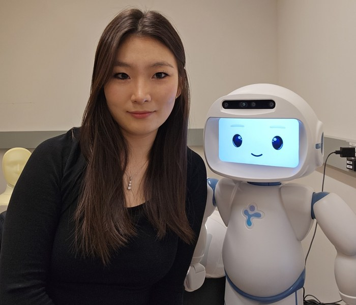
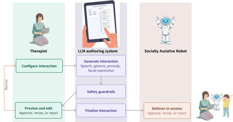
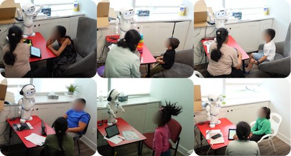
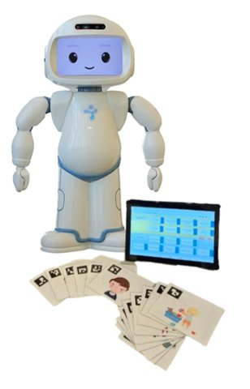
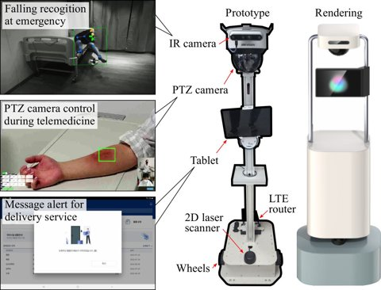
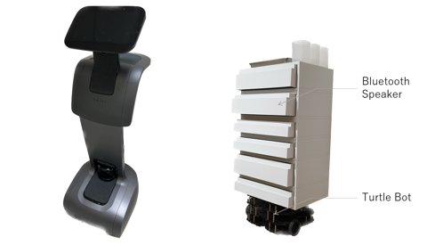
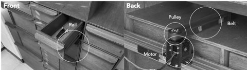
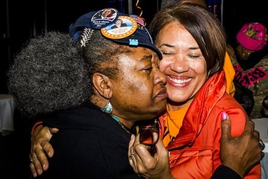

PhD Candidate, Electrical and Computer Engineering, University of Waterloo
I am a PhD candidate in the Social and Intelligent Robotics Research Lab (SIRRL) at the University of Waterloo, advised by Prof. Kerstin Dautenhahn.
I study why socially assistive robots rarely survive outside research labs, and how to change that. Over 3 years of co-design with speech-language therapists and a longitudinal field study (6-month in-the-wild deployment with 9 children at a pediatric speech therapy centre), I found the main barrier: every new or updated robot interaction still needs a researcher. I am now building an LLM-powered authoring system that lets therapists create, customize, and iterate on robot interactions themselves, without engineering support.
Before Waterloo, I received my M.S. in Brain and Cognitive Engineering from Korea University, advised by Prof. Christian Wallraven, where I compared human and deep-network perception of emotion in context. I was also a research intern at KIST, working on multi-robot hospital systems and human-robot trust. I hold a B.E. in Multimedia Engineering and a B.A. in Child Studies from Seoul Women's University.
Research keywords: human-robot interaction, socially assistive robots, end-user authoring, Large Multimodal model-powered systems, co-design, longitudinal field deployment

My research focuses on making socially assistive robots sustainable in real-world settings. I co-design robots with domain experts, deploy them long-term in everyday settings, and give non-technical users control over how the robots behave.

Each child in speech therapy needs activities matched to their age, level, and interests. Today, a researcher must program every new robot interaction. I am building an LLM-powered authoring system so that therapists can create and adapt robot interactions themselves. The goal is a robot that stays useful for years and serves children across a wide range of ages and diagnoses.

Can therapists use social robots in routine practice without engineers or researchers? A therapist used our social robot system in regular practice with six children with language delay. Each child had seven weekly sessions within an 11-week period, and no researchers were on site. The therapist reported that the robot helped children regain attention, become calm during meltdowns, and stay motivated. For some children, though, the fixed robot scripts did not match their developmental level or became repetitive. This result motivates my current work on therapist authoring.
Advanced Robotics, 2026 · paper
ACM/IEEE HRI 2026 Pioneers (acceptance rate 23%) · paper

What do non-technical users, such as therapists, need to use social robots in real-world settings? We co-designed the robot with two speech-language therapists for 22 months and identified five design requirements:
We built these requirements into a platform with a social robot and a tablet dashboard. The dashboard runs 22 therapy activities for children aged 0–9.
IEEE RO-MAN 2025 · paper
ICSR 2024 · paper

We built a team of two robots to reduce infection risk and staff workload in isolation wards. A care robot handles telemedicine and emergency detection, and a delivery robot transports items. I designed the user study scenarios. I interviewed nurses with COVID-19 isolation-ward experience and people with personal quarantine experience. Then I turned their feedback into recommendations for the system.
IEEE/RSJ IROS 2023 · paper

Service robots increasingly work in teams. I tested whether a visible hierarchy between robots changes how users rate the team. People preferred flat teams, especially when both robots used honorific speech. They also rated teams that mirrored respectful human interaction as more socially intelligent and professional.
IEEE/RSJ IROS 2023 · paper

Using a robotic drawer, I compared a robot that acts on its own judgment with a robot that waits for a voice command. Users rated the command-following robot as more useful, intelligent, and appropriate. This result suggests that people want to keep control of a robot, even in everyday tasks.
IEEE RO-MAN 2023 · paper

People judge a facial expression partly from its surroundings. I compared human perception experiments with deep neural networks on real-world photos. I found that people use contextual cues, but the models rely mostly on the face. To match human perception, emotion-recognition AI needs to model context.
ACM ICMI 2022 Companion · paper